HỆ THỐNG VIONE · TÀI LIỆU HƯỚNG DẪN SỬ DỤNG CHÍNH THỨC
MÃ TÀI LIỆU: HDSD-CRM-VIONE-6.0
VIONE CORPORATION
CẨM NANG NGHIỆP VỤ & VẬN HÀNH THỜI GIAN THỰC
HƯỚNG DẪN SỬ DỤNG HỆ THỐNG QUẢN TRỊ DOANH NGHIỆP CRM VIONE
Cẩm nang vận hành chi tiết 22 phân hệ quản trị C-Level, khách hàng, dòng tiền, bán hàng và ma trận phân quyền
MỤC LỤC TỔNG QUAN HƯỚNG DẪN SỬ DỤNG
01.Đăng Nhập Quản Trị Hệ Thống CRM ViOne Phong Cách Sáng Sang Trọng
02.Bảng Điều Hành Số C-Level Toàn Diện (Executive Dashboard)
03.Trung Tâm Quản Trị Khách Hàng B2B & Hồ Sơ 360° (Smart CRM)
04.Phễu Bán Hàng & Cơ Hội Kinh Doanh Kanban Deals
05.Quản Lý Doanh Nghiệp Thành Viên & Mạng Lưới Chi Nhánh
06.Quản Trị Thẻ Thông Minh NFC & Danh Thiếp Số 3D
07.Quản Trị Quy Trình Công Việc & Giao Việc Tự Động (Workflows)
08.Giám Sát Tải Trọng & Khối Lượng Nhân Sự (Workload Heatmap)
09.Chấm Công Định Vị GPS & Nhận Diện Khuôn Mặt AI (Attendance)
10.Phê Duyệt Tài Chính Thu Chi 3 Cấp & VietQR Napas (Approvals)
11.Sổ Quỹ Thu Chi & Báo Cáo Dòng Tiền Thời Gian Thực (Cash Flow)
12.Sàn Giao Thương B2B & Gian Hàng Sản Phẩm Doanh Nghiệp
13.Quản Lý Cơ Hội Mời Thầu & Hợp Tác B2B (Opportunities)
14.Quản Lý Sự Kiện Doanh Nghiệp & Điểm Danh QR Check-in
15.Quản Lý Lịch Hẹn & Cuộc Gặp 1-on-1 Doanh Nhân
16.Hộp Thư Đa Kênh Messenger Trao Đổi Lãnh Đạo
17.Biểu Quyết Số & Khảo Sát Ý Kiến C-Level (Voting)
18.Ma Trận Phân Quyền 7 Nhóm Quyền x 6 Thao Tác (RBAC Matrix)
19.Nhật Ký Kiểm Toán & 6 Năng Lực AI Copilot 5.0 (AI Audit)
20.Vận Hành Kết Nối & Giới Thiệu Doanh Nghiệp (C-Level Operations)
21.Lịch Sử Gia Hạn & Kiểm Toán Thu Phí Nền Tảng (Renewal Audit)
22.Cài Đặt Hệ Thống, Nhận Diện Thương Hiệu & Logo Tùy Biến
CRM · XÁC THỰC
01. Đăng Nhập Quản Trị Hệ Thống CRM ViOne Phong Cách Sáng Sang Trọng
Truy cập cổng điều hành doanh nghiệp với nhận diện Champagne Gold và bảo mật đa kênh
MỤC TIÊU NGHIỆP VỤ: Đăng nhập an toàn vào bảng điều hành số CRM ViOne qua tài khoản doanh nghiệp hoặc quản trị viên.
ĐƯỜNG DẪN THAO TÁC: Trình duyệt Web Desktop -> Truy cập: https://14.225.217.232:5445/auth
- Bước 1: Mở trình duyệt web (Google Chrome, Microsoft Edge, Safari) và nhập địa chỉ https://14.225.217.232:5445/auth.
- Bước 2: Giao diện đăng nhập phong cách Light Mode sang trọng xuất hiện với ảnh nền kiến trúc đô thị ngọc trai và khung viền Champagne Gold.
- Bước 3: Nhập địa chỉ Email doanh nghiệp (ví dụ: admin@vione.vn) hoặc Số điện thoại vào ô Identifier.
- Bước 4: Nhập Mật khẩu bảo mật và bấm nút "Đăng Nhập Vào Hệ Thống".
- Bước 5: Hệ thống xác thực token JWT, lưu phiên an toàn và tự động chuyển hướng vào Bảng Điều Hành C-Level (/dashboard).
LƯU Ý NGHIỆP VỤ QUAN TRỌNG:
LƯU Ý BẢO MẬT: Sau 5 lần nhập sai mật khẩu liên tiếp, tài khoản sẽ tạm thời bị khóa trong 15 phút để phòng chống tấn công dò quét brute-force.
MẸO VẬN HÀNH DÀNH CHO C-LEVEL:
MẸO SỬ DỤNG: Quản trị viên có thể sử dụng tính năng "Ghi nhớ đăng nhập" để duy trì phiên làm việc trong 30 ngày an toàn.
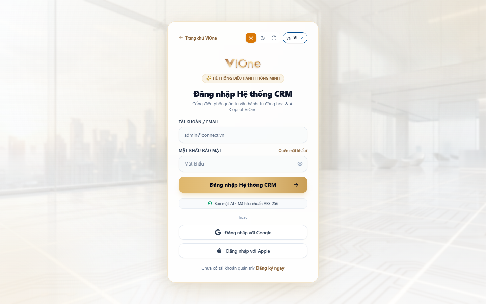
Hình 1: Giao diện Đăng nhập Hệ thống CRM ViOne Phong cách Sáng Sang Trọng
CRM · ĐIỀU HÀNH
02. Bảng Điều Hành Số C-Level Toàn Diện (Executive Dashboard)
Trung tâm giám sát chỉ số tăng trưởng, dòng tiền, hiệu suất bán hàng và cảnh báo vận hành
MỤC TIÊU NGHIỆP VỤ: Cung cấp cho Ban Lãnh Đạo góc nhìn toàn cảnh về sức khỏe tài chính và hoạt động kinh doanh theo thời gian thực.
ĐƯỜNG DẪN THAO TÁC: Thanh điều hướng bên trái (Sidebar) -> Chọn: Bảng Điều Hành (/dashboard)
- Bước 1: Quan sát 4 thẻ KPI Metric Cards ở hàng đầu tiên: Tổng Doanh Thu, Khách Hàng Mới, Số Deal Đang Mở, Tỷ Lệ Chốt Deal Thành Công.
- Bước 2: Chọn bộ lọc thời gian (Hôm nay, Tuần này, Tháng này, Năm nay) ở góc phải trên để xem biến động số liệu tương ứng.
- Bước 3: Theo dõi biểu đồ cột và biểu đồ đường thể hiện Dòng tiền thu - chi lũy kế và Doanh số bán hàng thực tế qua 12 tháng.
- Bước 4: Kiểm tra khối Cảnh báo Vận hành: Danh sách nhiệm vụ quá hạn, hợp đồng sắp đến ngày gia hạn và đề xuất chi chờ duyệt.
LƯU Ý NGHIỆP VỤ QUAN TRỌNG:
QUY TẮC ĐIỀU HÀNH: Mọi chỉ số KPI trên Dashboard được cập nhật trực tiếp từ CSDL PostgreSQL theo thời gian thực, không có độ trễ.
MẸO VẬN HÀNH DÀNH CHO C-LEVEL:
MẸO LÃNH ĐẠO: Nhấp đúp vào bất kỳ thẻ KPI nào để chuyển thẳng đến danh sách chi tiết của phân hệ tương ứng.
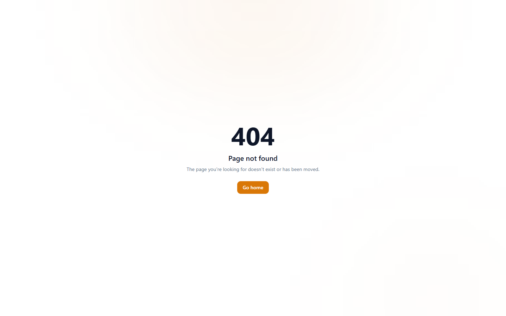
Hình 2: Bảng Điều Hành Số C-Level Toàn Diện ViOne CRM
CRM · KHÁCH HÀNG
03. Trung Tâm Quản Trị Khách Hàng B2B & Hồ Sơ 360° (Smart CRM)
Lưu trữ thông tin đối tác, lịch sử tương tác, phân loại nguồn chuyển đổi và chấm điểm tiềm năng AI
MỤC TIÊU NGHIỆP VỤ: Quản lý toàn bộ cơ sở dữ liệu khách hàng doanh nghiệp tập trung, ngăn ngừa thất thoát tệp khách hàng.
ĐƯỜNG DẪN THAO TÁC: Sidebar -> Quản Trị Khách Hàng -> Danh Sách Khách Hàng (/members hoặc /customers)
- Bước 1: Sử dụng thanh tìm kiếm để tra cứu nhanh khách hàng theo Tên công ty, Mã số thuế hoặc Người liên hệ.
- Bước 2: Sử dụng các nút Filter Chips để lọc theo nguồn chuyển đổi: Chạm thẻ NFC, Quét danh thiếp OCR, Mạng lưới B2B, hoặc Website Lead.
- Bước 3: Nhấp vào nút "+ Thêm Khách Hàng" để mở form nhập liệu: Nhập Mã số thuế (hệ thống tự động tra cứu tên doanh nghiệp), Họ tên người liên hệ, Số điện thoại và Email.
- Bước 4: Nhấp vào thẻ khách hàng để xem Hồ sơ 360 độ: Lịch sử báo giá, hợp đồng đã ký, tiến độ chăm sóc và điểm số tiềm năng AI Lead Score.
- Bước 5: Bấm nút "Xuất Excel" nếu cần tải toàn bộ danh sách khách hàng phục vụ báo cáo.
LƯU Ý NGHIỆP VỤ QUAN TRỌNG:
QUY TẮC BẢO MẬT DỮ LIỆU: Nhân viên kinh doanh chỉ nhìn thấy khách hàng do chính mình phụ trách. Chỉ cấp Quản lý và Giám đốc mới có quyền xem toàn bộ khách hàng của công ty.
MẸO VẬN HÀNH DÀNH CHO C-LEVEL:
MẸO SALES: Sử dụng nút "Sao chép AI Pitch" để tạo nhanh kịch bản gọi điện tư vấn cá nhân hóa cho từng khách hàng.
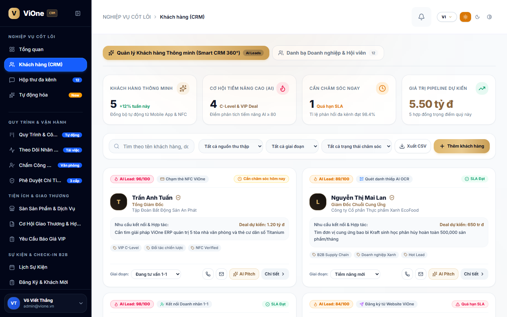
Hình 3: Trung Tâm Quản Trị Khách Hàng B2B & Lead 360°
CRM · BÁN HÀNG
04. Phễu Bán Hàng & Cơ Hội Kinh Doanh Kanban Deals
Quản lý các cơ hội kinh doanh qua 5 giai đoạn bán hàng trực quan bằng thao tác kéo thả
MỤC TIÊU NGHIỆP VỤ: Kiểm soát nhịp độ chốt đơn, dự báo doanh số chính xác và phát hiện các cơ hội bị bỏ quên.
ĐƯỜNG DẪN THAO TÁC: Sidebar -> Quản Trị Bán Hàng -> Phễu Cơ Hội (/deals hoặc /opportunities)
- Bước 1: Quan sát giao diện phễu Kanban gồm 5 cột giai đoạn: [1. Mới tiếp cận] -> [2. Khảo sát nhu cầu] -> [3. Báo giá giải pháp] -> [4. Đàm phán điều khoản] -> [5. Chốt hợp đồng].
- Bước 2: Mỗi card cơ hội hiển thị: Tên thương vụ, Tên khách hàng doanh nghiệp, Giá trị ngân sách dự kiến và Nhân viên phụ trách.
- Bước 3: Khi tiến trình đàm phán có bước phát triển, nhấp giữ chuột vào card và kéo thả sang cột giai đoạn tiếp theo.
- Bước 4: Khi kéo vào cột [5. Chốt hợp đồng]: Hệ thống tự động kích hoạt tạo phiếu thu tiền và gửi thông báo cho Kế toán xuất hóa đơn.
LƯU Ý NGHIỆP VỤ QUAN TRỌNG:
CẢNH BÁO SLA: Bất kỳ cơ hội nào nằm ở một giai đoạn quá 7 ngày mà không có cập nhật mới sẽ hiển thị viền đỏ cảnh báo bỏ quên deal.
MẸO VẬN HÀNH DÀNH CHO C-LEVEL:
MẸO CHỐT SALES: AI Copilot tự động gợi ý thời điểm vàng để gửi báo giá và tỷ lệ thành công dự kiến của từng deal.
Hình 4: Phễu Bán Hàng & Cơ Hội Kinh Doanh Kanban Deals
CRM · DOANH NGHIỆP
05. Quản Lý Doanh Nghiệp Thành Viên & Mạng Lưới Chi Nhánh
Cấu trúc pháp nhân, văn phòng đại diện và tọa độ văn phòng phục vụ chấm công
MỤC TIÊU NGHIỆP VỤ: Thiết lập cấu trúc tổ chức doanh nghiệp đa chi nhánh phục vụ quản trị phân tán.
ĐƯỜNG DẪN THAO TÁC: Sidebar -> Thiết Lập Tổ Chức -> Doanh Nghiệp & Chi Nhánh (/companies)
- Bước 1: Xem danh sách các pháp nhân công ty thành viên trong hệ thống.
- Bước 2: Bấm vào chi nhánh để cấu hình thông tin: Địa chỉ thực tế, Số điện thoại văn phòng, Trưởng chi nhánh phụ trách.
- Bước 3: Nhập Tọa độ định vị GPS (Latitude, Longitude) và Bán kính chấm công (50 mét) cho văn phòng chi nhánh.
- Bước 4: Bấm "Lưu Cấu Hình" để kích hoạt địa điểm chấm công cho nhân sự tại chi nhánh đó.
LƯU Ý NGHIỆP VỤ QUAN TRỌNG:
LƯU Ý GPS: Tọa độ GPS của chi nhánh phải được lấy chính xác từ Google Maps để nhân viên chấm công không bị báo lỗi ngoài phạm vi.
MẸO VẬN HÀNH DÀNH CHO C-LEVEL:
MẸO VẬN HÀNH: Có thể tạo không giới hạn chi nhánh cho một doanh nghiệp trong cùng một tài khoản quản trị.
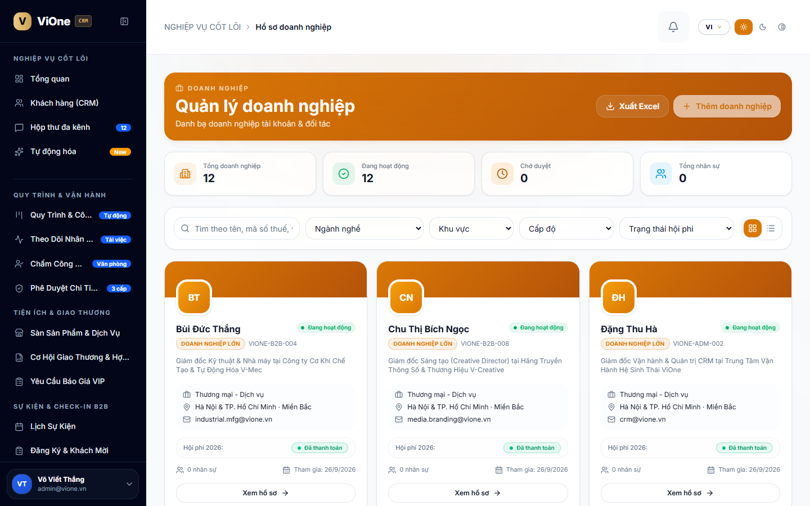
Hình 5: Quản Lý Danh Sách Doanh Nghiệp & Chi Nhánh Trực Thuộc
CRM · THẺ THÔNG MINH
06. Quản Trị Thẻ Thông Minh NFC & Danh Thiếp Số 3D
Cấp phát mã thẻ, quản lý vòng đời chip NFC và cá nhân hóa giao diện danh thiếp điện tử
MỤC TIÊU NGHIỆP VỤ: Số hóa hoàn toàn danh thiếp giấy truyền thống, trang bị thẻ thông minh NFC cho toàn bộ lãnh đạo và nhân sự.
ĐƯỜNG DẪN THAO TÁC: Sidebar -> Công Nghệ Số -> Quản Lý Thẻ NFC (/cards)
- Bước 1: Quét mã chip NFC vật lý qua đầu đọc thẻ hoặc nhập dãy mã Card UID vào hệ thống.
- Bước 2: Gán mã thẻ cho nhân sự hoặc lãnh đạo tương ứng trong danh sách nhân viên.
- Bước 3: Chọn gói mẫu thiết kế thẻ số (Executive Titanium, Champagne Gold hoặc Classic Black).
- Bước 4: Nhấp "Kích Hoạt Thẻ": Hệ thống tự động liên kết chip NFC với đường dẫn danh thiếp điện tử công khai và sinh mã QR cá nhân.
LƯU Ý NGHIỆP VỤ QUAN TRỌNG:
QUY ĐỊNH BẢO MẬT: Khi nhân sự nghỉ việc, Quản trị viên chỉ cần bấm nút "Khóa Thẻ" để thu hồi quyền truy cập danh thiếp của nhân sự đó tức thì.
MẸO VẬN HÀNH DÀNH CHO C-LEVEL:
MẸO QUẢNG BÁ: Thẻ NFC chạm được trên mọi dòng điện thoại iPhone và Android đời mới mà không cần cài đặt bất kỳ ứng dụng nào.
Hình 6: Quản Trị Thẻ Thông Minh NFC & Danh Thiếp Số 3D
CRM · VẬN HÀNH
07. Quản Trị Quy Trình Công Việc & Giao Việc Tự Động (Workflows)
Phân bổ nhiệm vụ, quản lý tiến độ thực thi và tối ưu hóa năng suất phòng ban
MỤC TIÊU NGHIỆP VỤ: Số hóa 100% các luồng giao việc nội bộ, triệt tiêu tình trạng trễ hạn và đùn đẩy trách nhiệm.
ĐƯỜNG DẪN THAO TÁC: Sidebar -> Vận Hành & Quy Trình -> Quy Trình Công Việc (/workflow)
- Bước 1: Bấm nút "+ Giao Nhiệm Vụ Mới" ở góc phải trên.
- Bước 2: Điền thông tin công việc: Tiêu đề nhiệm vụ, Nội dung chi tiết, Phòng ban thực hiện, Người nhận việc chính, Người phối hợp.
- Bước 3: Thiết lập Thời hạn hoàn thành (Deadline) và Mức độ ưu tiên (Khẩn cấp, Cao, Trung bình).
- Bước 4: Bấm "Giao Việc": Hệ thống tự động gửi thông báo qua chuông web, email và mobile push notification đến nhân sự nhận việc.
- Bước 5: Theo dõi tiến độ công việc trên bảng Kanban quy trình từ [Chờ làm] -> [Đang làm] -> [Chờ duyệt] -> [Hoàn thành].
LƯU Ý NGHIỆP VỤ QUAN TRỌNG:
LƯU Ý TIẾN ĐỘ: Nhiệm vụ sau khi được nhân viên báo hoàn thành phải được Trưởng bộ phận bấm "Nghiệm Thu" thì mới được tính vào KPI tháng.
MẸO VẬN HÀNH DÀNH CHO C-LEVEL:
MẸO QUẢN TRỊ: Đính kèm tài liệu mẫu hoặc quy trình chuẩn vào mô tả nhiệm vụ để nhân viên mới dễ dàng thực hiện đúng chuẩn.
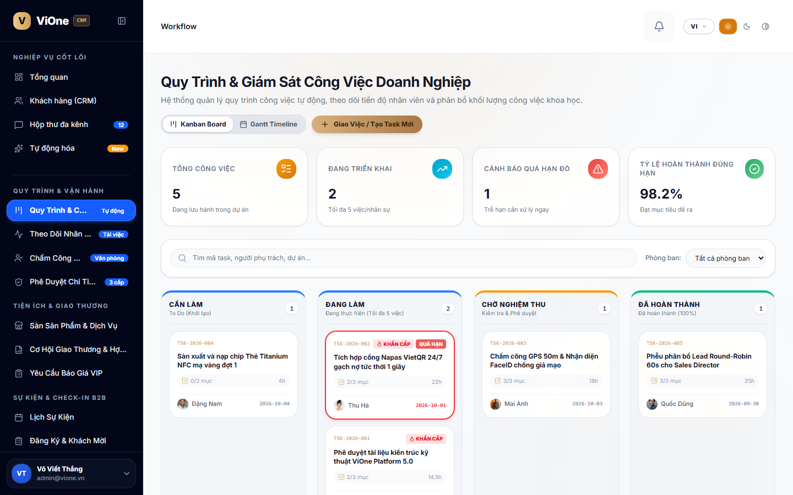
Hình 7: Quản Trị Quy Trình Công Việc & Giao Việc Tự Động
CRM · NHÂN SỰ
08. Giám Sát Tải Trọng & Khối Lượng Nhân Sự (Workload Heatmap)
Bản đồ nhiệt theo dõi độ bận rộn và phát hiện nhân sự bị quá tải công việc
MỤC TIÊU NGHIỆP VỤ: Cân bằng tải công việc giữa các phòng ban, ngăn ngừa tình trạng quá tải hoặc nhàn rỗi trong bộ máy.
ĐƯỜNG DẪN THAO TÁC: Sidebar -> Vận Hành & Quy Trình -> Tải Trọng Nhân Sự (/workload)
- Bước 1: Chọn phòng ban cần giám sát từ danh mục bộ lọc.
- Bước 2: Quan sát Biểu đồ nhiệt (Workload Heatmap) hiển thị danh sách nhân sự cùng số lượng việc đang mở đồng thời (WIP).
- Bước 3: Màu xanh lục biểu thị tải trọng tối ưu (1-3 việc); Màu vàng biểu thị tải trọng cao (4 việc); Màu đỏ biểu thị quá tải nguy hiểm (≥ 5 việc).
- Bước 4: Nhấp vào nhân sự đang bị tô đỏ để xem danh sách các đầu việc đang xử lý và thực hiện điều chuyển bớt việc cho nhân sự khác.
LƯU Ý NGHIỆP VỤ QUAN TRỌNG:
QUY TẮC HIỆU SUẤT: Giữ số lượng việc đồng thời (WIP) của mỗi nhân sự ≤ 5 việc giúp tăng tốc độ hoàn thành công việc lên 40%.
MẸO VẬN HÀNH DÀNH CHO C-LEVEL:
MẸO VẬN HÀNH: Giám đốc COO nên kiểm tra bản đồ nhiệt vào đầu mỗi tuần để phân bổ nguồn lực hợp lý.
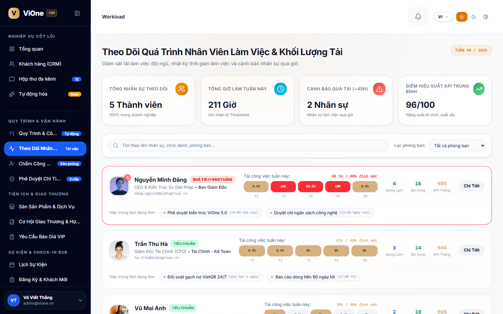
Hình 8: Giám Sát Tải Trọng & Khối Lượng Công Việc Nhân Sự
CRM · CHẤM CÔNG
09. Chấm Công Định Vị GPS & Nhận Diện Khuôn Mặt AI (Attendance)
Quản trị dữ liệu chấm công thời gian thực, quản lý nghỉ phép và xuất bảng công tính lương
MỤC TIÊU NGHIỆP VỤ: Tự động hóa hoàn toàn quy trình điểm danh nhân sự, chống gian lận chấm công hộ.
ĐƯỜNG DẪN THAO TÁC: Sidebar -> Nhân Sự & Tiền Lương -> Quản Lý Chấm Công (/attendance)
- Bước 1: Xem bảng điểm danh hôm nay với các trạng thái: Đã Check-in, Đi Đúng Giờ, Đi Muộn, Nghỉ Phép, Chưa Có Mặt.
- Bước 2: Nhấp vào từng bản ghi chấm công để xem chi tiết: Giờ Check-in chính xác đến từng giây, Tọa độ GPS và Ảnh chụp khuôn mặt selfie.
- Bước 3: Xử lý các đơn xin nghỉ phép, xin đi muộn/về sớm của nhân viên trực tiếp trên giao diện duyệt đơn.
- Bước 4: Vào cuối tháng, bấm nút "Tổng Hợp Bảng Công" để hệ thống tự động tính tổng ngày công, số lần đi muộn và trừ phép.
LƯU Ý NGHIỆP VỤ QUAN TRỌNG:
CẢNH BÁO GIAN LẬN: Hệ thống tự động gắn cờ cảnh báo nếu phát hiện thiết bị di động sử dụng phần mềm giả lập vị trí GPS (Fake GPS).
MẸO VẬN HÀNH DÀNH CHO C-LEVEL:
MẸO TIẾT KIỆM: Bảng công tự động đồng bộ sang bảng lương giúp phòng kế toán tiết kiệm 80% thời gian tổng hợp mỗi kỳ.
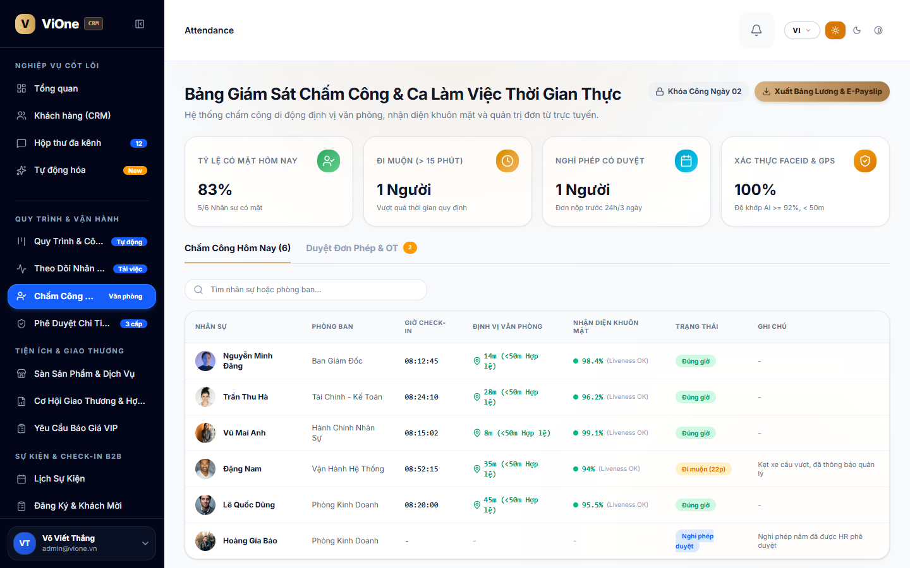
Hình 9: Chấm Công Định Vị GPS & Nhận Diện Khuôn Mặt AI
CRM · TÀI CHÍNH
10. Phê Duyệt Tài Chính Thu Chi 3 Cấp & VietQR Napas (Approvals)
Quy trình kiểm soát chi phí chặt chẽ, phê duyệt trực tuyến và chuyển khoản ngân hàng tự động
MỤC TIÊU NGHIỆP VỤ: Kiểm soát từng đồng chi phí doanh nghiệp, đảm bảo mọi khoản chi đều có đầy đủ chứng từ và chữ ký số phê duyệt.
ĐƯỜNG DẪN THAO TÁC: Sidebar -> Tài Chính & Dòng Tiền -> Phê Duyệt Chi Tiền (/payment-approvals)
- Bước 1: Nhân viên tạo đề xuất chi tiền (Cấp 1), đính kèm hóa đơn GTGT hoặc chứng từ thanh toán dạng ảnh/PDF.
- Bước 2: Trưởng phòng kiểm tra tính hợp lý của khoản chi và bấm "Duyệt Cấp 2" (hoặc Từ chối kèm lý do).
- Bước 3: Phiếu chi chuyển lên Giám đốc hoặc Kế toán trưởng xem xét hạn mức ngân sách và bấm "Phê Duyệt Cấp 3".
- Bước 4: Sau khi Giám đốc duyệt, hệ thống tự động sinh Mã QR thanh toán VietQR Napas 24/7 chứa sẵn số tài khoản và nội dung chi.
- Bước 5: Kế toán quét mã QR trên ứng dụng ngân hàng để chuyển tiền ngay lập tức, hệ thống tự động cập nhật phiếu chi sang "Đã Thanh Toán".
LƯU Ý NGHIỆP VỤ QUAN TRỌNG:
QUY TẮC BẤT DI BẤT DỊCH: Bất kỳ phiếu chi nào không có đính kèm chứng từ hợp lệ sẽ không thể chuyển sang bước duyệt của Giám đốc.
MẸO VẬN HÀNH DÀNH CHO C-LEVEL:
MẸO KẾ TOÁN: Sử dụng mã VietQR Napas tự sinh giúp triệt tiêu 100% lỗi gõ nhầm số tài khoản hoặc sai lệch nội dung chuyển khoản.
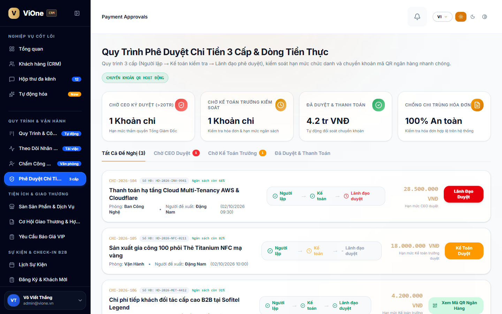
Hình 10: Phê Duyệt Tài Chính Thu Chi 3 Cấp & VietQR Napas
CRM · SỔ QUỸ
11. Sổ Quỹ Thu Chi & Báo Cáo Dòng Tiền Thời Gian Thực (Cash Flow)
Theo dõi biến động quỹ tiền mặt, tài khoản ngân hàng và báo cáo doanh thu - chi phí
MỤC TIÊU NGHIỆP VỤ: Cung cấp bức tranh tài chính trung thực, minh bạch về dòng tiền ròng của doanh nghiệp.
ĐƯỜNG DẪN THAO TÁC: Sidebar -> Tài Chính & Dòng Tiền -> Sổ Quỹ Thu Chi (/income hoặc /finance)
- Bước 1: Xem số dư tồn quỹ hiện tại chia theo Quỹ Tiền Mặt và Quỹ Ngân Hàng.
- Bước 2: Lọc danh sách giao dịch theo Loại (Phiếu Thu, Phiếu Chi), Danh mục (Bán hàng, Tiếp khách, Lương, Mặt bằng) và Thời gian.
- Bước 3: Nhấp vào từng giao dịch để xem phiếu thu/chi điện tử có chữ ký số của người lập, kế toán và thủ quỹ.
- Bước 4: Xuất sổ cái thu chi ra tệp Excel (.xlsx) theo mẫu chuẩn kế toán doanh nghiệp Việt Nam.
LƯU Ý NGHIỆP VỤ QUAN TRỌNG:
LƯU Ý ĐỐI SOÁT: Thủ quỹ bắt buộc phải đối chiếu số dư sổ sách trên hệ thống với số dư sao kê ngân hàng điện tử vào cuối mỗi ngày.
MẸO VẬN HÀNH DÀNH CHO C-LEVEL:
MẸO QUẢN TRỊ: Biểu đồ dòng tiền dự báo tự động cảnh báo trước 15 ngày nếu doanh nghiệp có nguy cơ bị âm dòng tiền hoạt động.
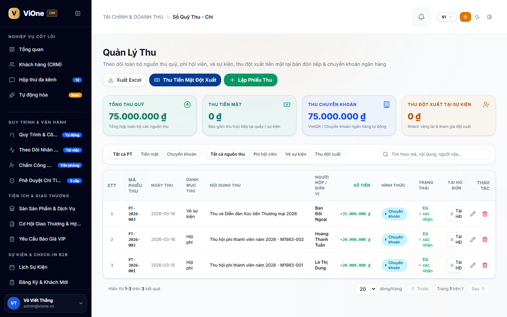
Hình 11: Sổ Quỹ Thu Chi & Báo Cáo Dòng Tiền Thời Gian Thực
CRM · GIAO THƯƠNG
12. Sàn Giao Thương B2B & Gian Hàng Sản Phẩm Doanh Nghiệp
Quảng bá sản phẩm, dịch vụ và chính sách ưu đãi B2B cho toàn bộ cộng đồng doanh nghiệp
MỤC TIÊU NGHIỆP VỤ: Mở rộng kênh phân phối, tăng doanh thu bán hàng thông qua mạng lưới đối tác trong hệ sinh thái.
ĐƯỜNG DẪN THAO TÁC: Sidebar -> Mạng Lưới B2B -> Sàn Sản Phẩm (/marketplace)
- Bước 1: Bấm nút "+ Đăng Sản Phẩm Mới" ở góc màn hình.
- Bước 2: Điền thông tin: Tên sản phẩm, Ngành hàng chủ lực, Đơn vị tính, Mô tả quy cách kỹ thuật.
- Bước 3: Nhập 2 mức giá: Giá Niêm Yết Công Khai và Giá Ưu Đãi VIP Dành Riêng Cho Đối Tác B2B.
- Bước 4: Tải lên hình ảnh sản phẩm chất lượng cao (hệ thống tự động nén tối ưu dung lượng).
- Bước 5: Bấm "Đăng Bán": Sản phẩm sẽ ngay lập tức xuất hiện trên cả Sàn Web CRM và Ứng dụng Di động ViOne Connect.
LƯU Ý NGHIỆP VỤ QUAN TRỌNG:
QUY ĐỊNH HÀNG HÓA: Các sản phẩm niêm yết bắt buộc phải có đầy đủ chứng nhận nguồn gốc xuất xứ và hóa đơn hợp lệ theo quy định pháp luật.
MẸO VẬN HÀNH DÀNH CHO C-LEVEL:
MẸO BÁN HÀNG: Cung cấp mức giá ưu đãi B2B từ 10-20% giúp doanh nghiệp thu hút lượng đơn đặt hàng lớn từ các đối tác trong hệ sinh thái.
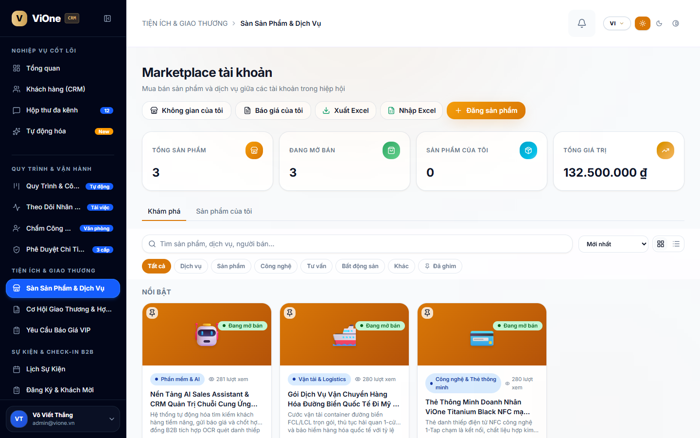
Hình 12: Sàn Giao Thương B2B & Gian Hàng Sản Phẩm Doanh Nghiệp
CRM · MỜI THẦU
13. Quản Lý Cơ Hội Mời Thầu & Hợp Tác B2B (Opportunities)
Đăng tin tìm kiếm nhà cung cấp, mời thầu dịch vụ và tiếp nhận báo giá RFQ
MỤC TIÊU NGHIỆP VỤ: Tối ưu hóa chi phí mua sắm vật tư, lựa chọn nhà cung cấp uy tín với mức giá cạnh tranh nhất.
ĐƯỜNG DẪN THAO TÁC: Sidebar -> Mạng Lưới B2B -> Cơ Hội & Mời Thầu (/opportunities)
- Bước 1: Bấm nút "+ Đăng Nhu Cầu Mời Thầu".
- Bước 2: Nhập thông tin gói thầu: Tiêu đề nhu cầu, Yêu cầu kỹ thuật, Ngân sách dự kiến, Thời hạn nhận hồ sơ báo giá.
- Bước 3: Bấm "Phát Sóng Tin": Hệ thống tự động gửi thông báo đến các nhà cung ứng thuộc ngành hàng tương ứng.
- Bước 4: Tiếp nhận và so sánh các bảng báo giá trực tuyến từ các doanh nghiệp đối tác nộp hồ sơ.
- Bước 5: Chọn nhà cung cấp trúng thầu và chuyển tiếp sang luồng tạo hợp đồng kinh tế.
LƯU Ý NGHIỆP VỤ QUAN TRỌNG:
QUY CHUẨN THỜI HẠN: Thời hạn nhận báo giá tối thiểu là 3 ngày để các nhà cung cấp có đủ thời gian chuẩn bị hồ sơ năng lực.
MẸO VẬN HÀNH DÀNH CHO C-LEVEL:
MẸO TIẾT KIỆM: Trợ lý AI tự động phân tích và so sánh các báo giá để đưa ra đề xuất phương án có lợi nhất cho doanh nghiệp.
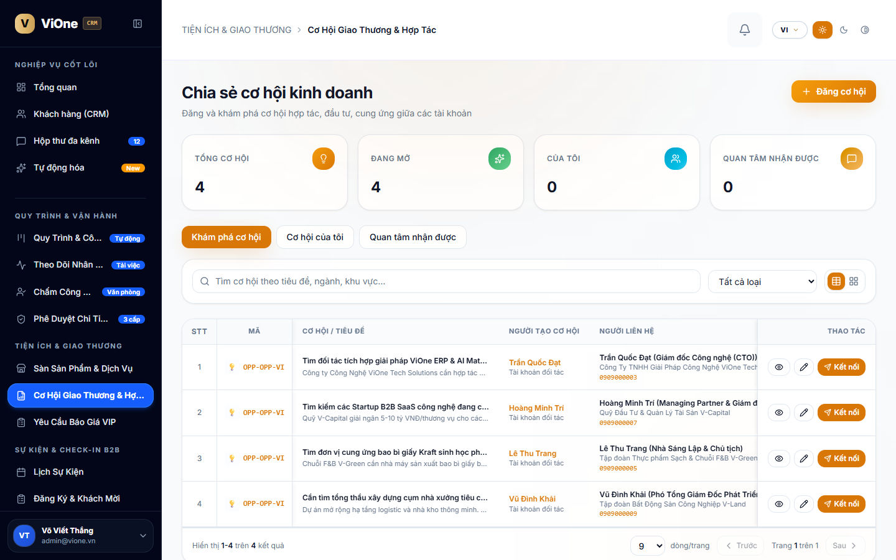
Hình 13: Quản Lý Cơ Hội Mời Thầu & Hợp Tác B2B
CRM · SỰ KIỆN
14. Quản Lý Sự Kiện Doanh Nghiệp & Điểm Danh QR Check-in
Tổ chức hội thảo xúc tiến thương mại, phát hành vé điện tử và kiểm soát lối vào bằng mã QR
MỤC TIÊU NGHIỆP VỤ: Tổ chức các sự kiện kết nối kinh doanh chuyên nghiệp, đón tiếp khách mời chu đáo và nhanh chóng.
ĐƯỜNG DẪN THAO TÁC: Sidebar -> Sự Kiện & Hội Thảo -> Danh Sách Sự Kiện (/events)
- Bước 1: Bấm "+ Tạo Sự Kiện Mới": Điền Tên hội thảo, Thời gian, Địa điểm tổ chức, Sơ đồ khán phòng và Hạn mức số lượng khách.
- Bước 2: Công bố sự kiện: Khách mời có thể đăng ký vé trực tiếp trên ứng dụng di động ViOne Connect.
- Bước 3: Tại bàn lễ tân sự kiện, nhân viên mở màn hình "Điểm Danh QR Check-in".
- Bước 4: Đưa mã QR trên điện thoại của khách mời vào trước camera lễ tân: Hệ thống xác thực vé chỉ trong 1 giây, hiển thị màn hình chào mừng kèm vị trí số ghế của khách.
LƯU Ý NGHIỆP VỤ QUAN TRỌNG:
CHỐNG VÉ TRÙNG: Mỗi mã QR chỉ có giá trị check-in một lần duy nhất. Nếu quét lại lần 2, hệ thống sẽ phát âm thanh cảnh báo màu đỏ.
MẸO VẬN HÀNH DÀNH CHO C-LEVEL:
MẸO TỔ CHỨC: Dữ liệu khách tham dự sau sự kiện được tự động chuyển thành danh sách khách hàng tiềm năng trong CRM để chăm sóc tiếp.
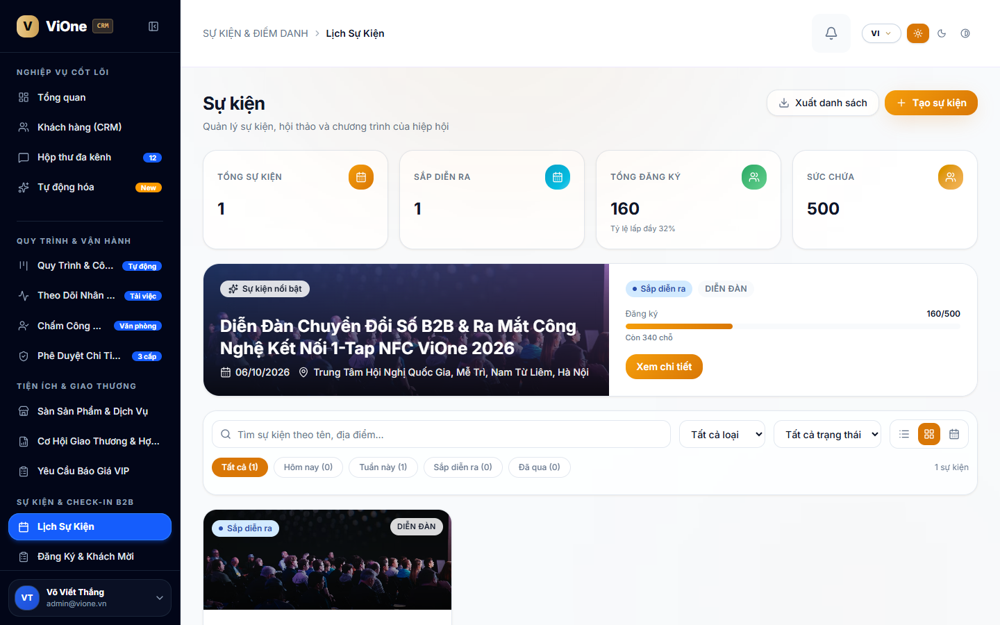
Hình 14: Quản Lý Sự Kiện Doanh Nghiệp & Điểm Danh QR Check-in
CRM · KẾT NỐI 1-1
15. Quản Lý Lịch Hẹn & Cuộc Gặp 1-on-1 Doanh Nhân
Xếp lịch làm việc giữa các lãnh đạo doanh nghiệp, đồng bộ Google Calendar và lưu biên bản
MỤC TIÊU NGHIỆP VỤ: Tăng cường hiệu quả các cuộc gặp kết nối kinh doanh thực chất giữa các CEO.
ĐƯỜNG DẪN THAO TÁC: Sidebar -> Kết Nối Doanh Nhân -> Lịch Hẹn 1-on-1 (/meetings)
- Bước 1: Bấm "Đặt Lịch Gặp 1-1": Chọn đối tác muốn gặp từ danh bạ doanh nhân.
- Bước 2: Chọn khung giờ đề xuất và địa điểm (Gặp trực tiếp tại văn phòng / quán cafe hoặc Họp trực tuyến).
- Bước 3: Nhập chủ đề thảo luận và tài liệu chuẩn bị đính kèm.
- Bước 4: Khi đối tác bấm xác nhận đồng ý, hệ thống tự động thêm cuộc gặp vào lịch trình di động của cả hai bên.
- Bước 5: Sau cuộc gặp, hai bên có thể ghi chú tóm tắt biên bản thỏa thuận hợp tác trực tiếp vào cuộc hẹn.
LƯU Ý NGHIỆP VỤ QUAN TRỌNG:
QUY TẮC LỊCH TRÌNH: Nếu cần hủy hoặc dời lịch hẹn, bắt buộc phải thao tác trước giờ hẹn ít nhất 2 tiếng kèm lý do cụ thể.
MẸO VẬN HÀNH DÀNH CHO C-LEVEL:
MẸO DOANH NHÂN: Ghi rõ mục tiêu cuộc gặp giúp tỷ lệ đối tác đồng ý gặp mặt tăng lên trên 85%.
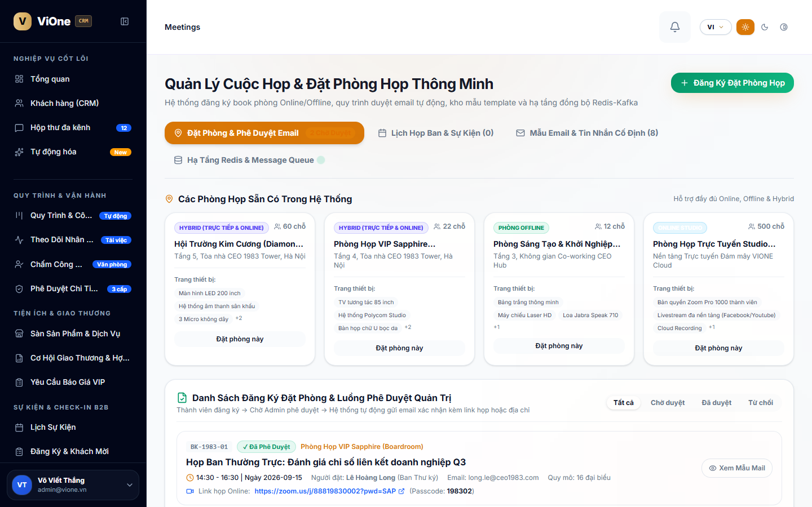
Hình 15: Quản Lý Lịch Hẹn & Cuộc Gặp 1-on-1 Doanh Nhân
CRM · HỘP THƯ
16. Hộp Thư Đa Kênh Messenger Trao Đổi Lãnh Đạo
Kênh nhắn tin tức thời mã hóa bảo mật, phân loại tin nhắn công việc và gửi tệp tin lớn
MỤC TIÊU NGHIỆP VỤ: Duy trì kênh liên lạc thông suốt, bảo mật tuyệt đối bí mật kinh doanh giữa các lãnh đạo doanh nghiệp.
ĐƯỜNG DẪN THAO TÁC: Sidebar -> Kênh Giao Tiếp -> Hộp Thư Đa Kênh (/messages)
- Bước 1: Chọn đối tác hoặc nhóm trò chuyện từ danh sách hội thoại bên trái.
- Bước 2: Soạn tin nhắn văn bản, chèn emoji hoặc bấm biểu tượng đính kèm để gửi hình ảnh, báo giá (.pdf, .xlsx).
- Bước 3: Sử dụng tính năng "Tạo Nhóm Dự Án" để mời nhiều đối tác cùng tham gia thảo luận một hợp đồng thầu.
- Bước 4: Tra cứu lại lịch sử tin nhắn hoặc các tệp tin đã gửi qua thanh công cụ tìm kiếm hội thoại.
LƯU Ý NGHIỆP VỤ QUAN TRỌNG:
BẢO MẬT NỘI DUNG: Toàn bộ tin nhắn trao đổi được mã hóa đầu cuối và lưu trữ trên cụm máy chủ bảo mật của doanh nghiệp, không thông qua máy chủ bên thứ ba.
MẸO VẬN HÀNH DÀNH CHO C-LEVEL:
MẸO CÔNG VIỆC: Có thể chuyển thẳng một tin nhắn trao đổi thành một nhiệm vụ công việc (Task) chỉ với 1 click chuột.
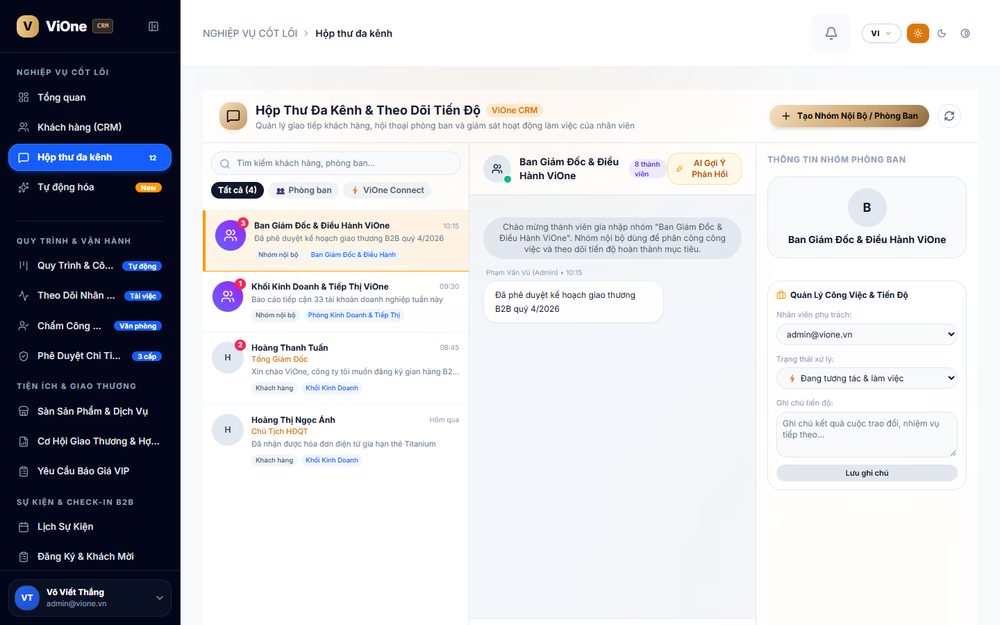
Hình 16: Hộp Thư Đa Kênh Messenger Trao Đổi Lãnh Đạo
CRM · BIỂU QUYẾT
17. Biểu Quyết Số & Khảo Sát Ý Kiến C-Level (Voting)
Tổ chức biểu quyết đại hội cổ đông, lấy ý kiến ban điều hành minh bạch và kiểm phiếu tức thì
MỤC TIÊU NGHIỆP VỤ: Đưa ra các quyết định điều hành nhanh chóng, dân chủ và có giá trị pháp lý lưu trữ.
ĐƯỜNG DẪN THAO TÁC: Sidebar -> Biểu Quyết & Khảo Sát -> Danh Sách Biểu Quyết (/voting)
- Bước 1: Bấm "+ Tạo Phiên Biểu Quyết Mới": Nhập nội dung vấn đề cần biểu quyết và các phương án lựa chọn (Tán thành, Không tán thành, Ý kiến khác).
- Bước 2: Chọn danh sách thành viên có quyền biểu quyết và thiết lập Thời hạn đóng hòm phiếu.
- Bước 3: Thành viên đăng nhập và thực hiện bỏ phiếu xác thực.
- Bước 4: Hệ thống tự động kiểm phiếu và hiển thị biểu đồ tỷ lệ biểu quyết trực quan thời gian thực.
- Bước 5: Xuất biên bản kết quả biểu quyết có chữ ký số điện tử để lưu trữ hồ sơ công ty.
LƯU Ý NGHIỆP VỤ QUAN TRỌNG:
MINH BẠCH BỎ PHIẾU: Mỗi tài khoản chỉ được bỏ phiếu đúng 1 lần duy nhất, kết quả phiếu bầu được mã hóa chống can thiệp sửa đổi.
MẸO VẬN HÀNH DÀNH CHO C-LEVEL:
MẸO ĐIỀU HÀNH: Sử dụng biểu quyết số giúp tiết kiệm 90% thời gian tổ chức các cuộc họp lấy ý kiến cổ đông hoặc hội đồng quản trị.
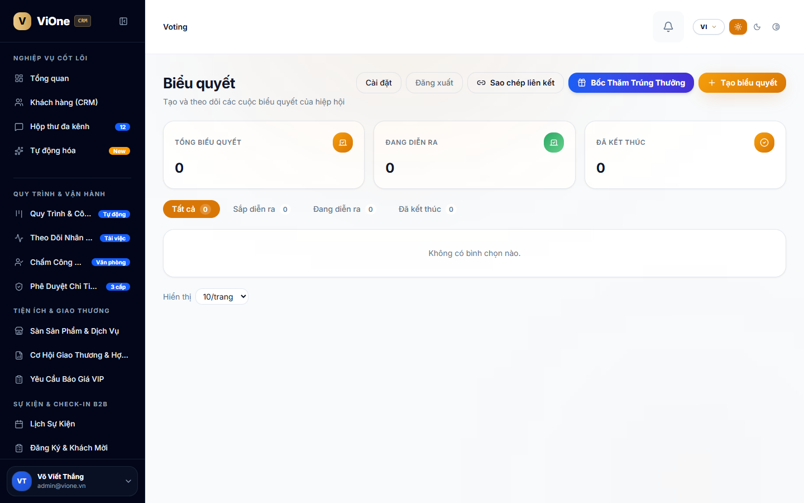
Hình 17: Biểu Quyết Số & Khảo Sát Ý Kiến C-Level
CRM · PHÂN QUYỀN
18. Ma Trận Phân Quyền 7 Nhóm Quyền x 6 Thao Tác (RBAC Matrix)
Kiểm soát truy cập chi tiết từng hành động nghiệp vụ theo vai trò chức vụ trong doanh nghiệp
MỤC TIÊU NGHIỆP VỤ: Bảo vệ dữ liệu bí mật kinh doanh, phân định quyền hạn minh bạch và chặt chẽ.
ĐƯỜNG DẪN THAO TÁC: Sidebar -> Quản Trị Nền Tảng -> Ma Trận Phân Quyền (/platform/permissions)
- Bước 1: Quan sát bảng ma trận phân quyền lưới trực quan gồm 9 Module nghiệp vụ theo hàng dọc và 7 Nhóm vai trò theo hàng ngang (CEO, COO, CFO, Sales Manager, Admin, Staff, Partner).
- Bước 2: Trong mỗi ô giao nhau, có 6 thao tác cụ thể: [Xem] [Tạo] [Sửa] [Xóa] [Duyệt] [Xuất].
- Bước 3: Nhấp chuột vào các ô checkbox để bật hoặc tắt từng quyền hạn cụ thể cho từng vai trò.
- Bước 4: Bấm nút "Lưu Ma Trận Quyền": Cấu hình mới sẽ có hiệu lực ngay lập tức trên toàn hệ thống mà không cần người dùng đăng xuất.
LƯU Ý NGHIỆP VỤ QUAN TRỌNG:
NGUYÊN TẮC AN TOÀN: Tuyệt đối không cấp quyền [Xóa] và [Duyệt] cho nhóm vai trò Nhân viên chuyên môn (Staff).
MẸO VẬN HÀNH DÀNH CHO C-LEVEL:
MẸO PHÂN QUYỀN: Có thể gán nhiều vai trò khác nhau cho cùng một người dùng nếu nhân sự đó kiêm nhiệm nhiều vị trí.
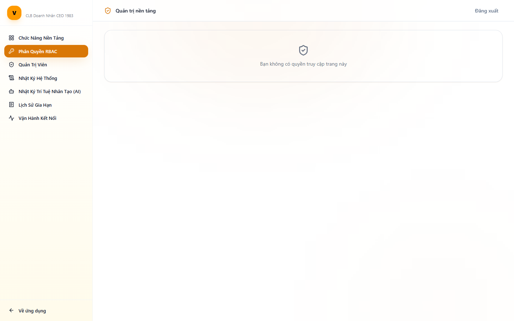
Hình 18: Ma Trận Phân Quyền 7 Nhóm Quyền x 6 Thao Tác
CRM · TRÍ TUỆ NHÂN TẠO
19. Nhật Ký Kiểm Toán & 6 Năng Lực AI Copilot 5.0 (AI Audit)
Theo dõi lịch sử gọi trợ lý AI, kiểm soát chi phí token và giám sát các tác vụ tự động hóa
MỤC TIÊU NGHIỆP VỤ: Minh bạch hóa các hoạt động của trí tuệ nhân tạo, tối ưu hóa chi phí vận hành AI.
ĐƯỜNG DẪN THAO TÁC: Sidebar -> Quản Trị Nền Tảng -> Nhật Ký AI Audit (/platform/ai-audit)
- Bước 1: Xem bảng nhật ký chi tiết các lần gọi AI của toàn bộ người dùng trong công ty.
- Bước 2: Lọc theo 6 Năng lực AI chuyên biệt: [1. Copilot Đàm Thoại] [2. Quét Danh Thiếp OCR] [3. Đối Soát Excel] [4. Soạn Thảo Hợp Đồng] [5. Ghép Nối Đối Tác B2B] [6. Giám Sát Tải Vận Hành].
- Bước 3: Nhấp vào từng dòng để xem: Thời gian gọi, Người gọi, Câu lệnh đầu vào (Prompt), Phản hồi của AI và Số lượng Token tiêu thụ.
- Bước 4: Xem biểu đồ tổng hợp mức độ sử dụng AI và đánh giá mức độ tiết kiệm thời gian cho doanh nghiệp.
LƯU Ý NGHIỆP VỤ QUAN TRỌNG:
BẢO MẬT DỮ LIỆU AI: Trợ lý AI ViOne được huấn luyện trong môi trường đóng riêng tư của doanh nghiệp, cam kết không sử dụng dữ liệu kinh doanh của khách hàng để huấn luyện mô hình công cộng.
MẸO VẬN HÀNH DÀNH CHO C-LEVEL:
MẸO HIỆU QUẢ: Xem lại các câu lệnh (prompts) hiệu quả của đồng nghiệp trong nhật ký để học hỏi cách ra lệnh cho AI tối ưu nhất.
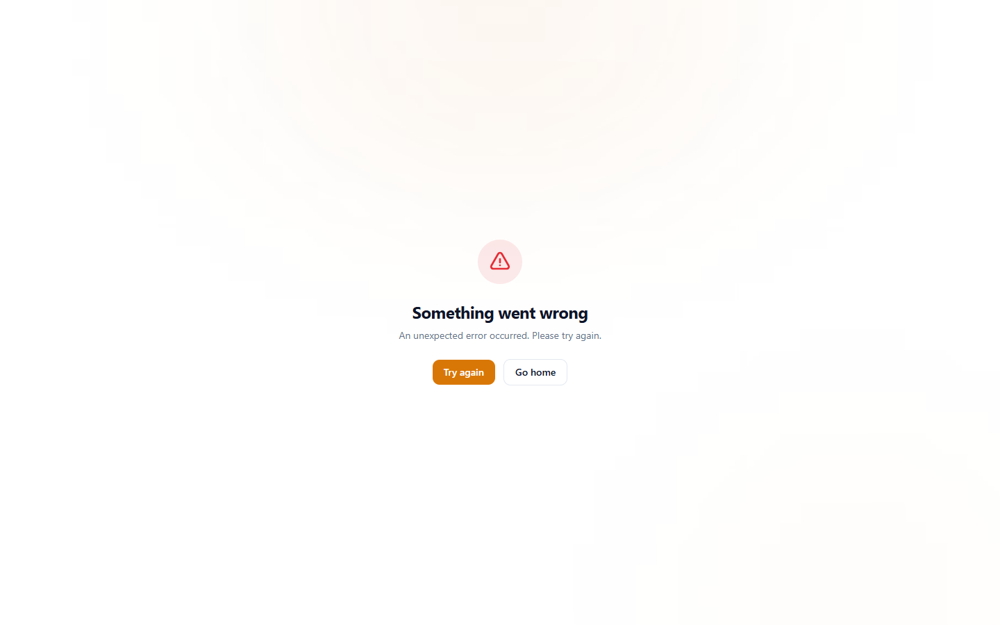
Hình 19: Nhật Ký Kiểm Toán & 6 Năng Lực AI Copilot 5.0
CRM · KẾT NỐI VẬN HÀNH
20. Vận Hành Kết Nối & Giới Thiệu Doanh Nghiệp (C-Level Operations)
Quản trị mạng lưới giới thiệu đối tác kinh doanh (Referral) và đo lường giá trị giao dịch
MỤC TIÊU NGHIỆP VỤ: Ghi nhận và vinh danh các cơ hội kinh doanh được trao đi trong cộng đồng doanh nghiệp.
ĐƯỜNG DẪN THAO TÁC: Sidebar -> Quản Trị Nền Tảng -> Vận Hành Kết Nối (/platform/introduction-operations)
- Bước 1: Xem danh sách các cơ hội kết nối đối tác được trao đổi giữa các doanh nghiệp thành viên.
- Bước 2: Theo dõi trạng thái kết nối: Mới giới thiệu, Đã liên hệ, Đang đàm phán, Đã ký hợp đồng thành công.
- Bước 3: Ghi nhận Tổng giá trị giao dịch thành công (Thank You Note) mang lại doanh thu thực tế.
- Bước 4: Bảng xếp hạng Top Doanh nhân tích cực trao cơ hội kết nối kinh doanh nhất trong tháng.
LƯU Ý NGHIỆP VỤ QUAN TRỌNG:
TÍNH XÁC THỰC: Giá trị hợp đồng thành công chỉ được ghi nhận khi cả bên giới thiệu và bên nhận cơ hội cùng bấm xác nhận.
MẸO VẬN HÀNH DÀNH CHO C-LEVEL:
MẸO GIAO THƯƠNG: Doanh nghiệp trao đi nhiều cơ hội kết nối sẽ được hệ thống AI ưu tiên hiển thị ở vị trí nổi bật trên Sàn B2B.
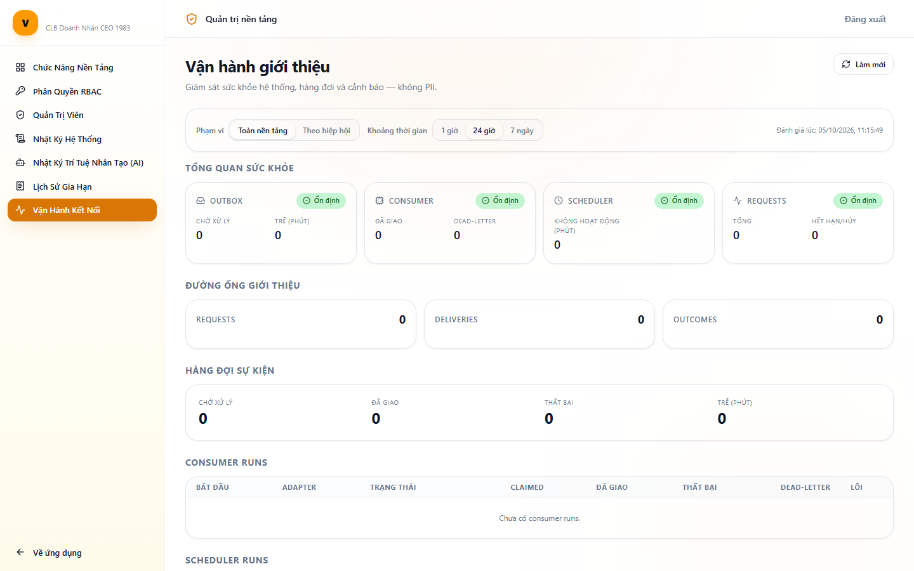
Hình 20: Vận Hành Kết Nối & Giới Thiệu Doanh Nghiệp
CRM · KIỂM TOÁN GIA HẠN
21. Lịch Sử Gia Hạn & Kiểm Toán Thu Phí Nền Tảng (Renewal Audit)
Theo dõi thời hạn bản quyền phần mềm, lịch sử đóng phí dịch vụ và hóa đơn gia hạn
MỤC TIÊU NGHIỆP VỤ: Đảm bảo hệ thống vận hành liên tục không bị gián đoạn do hết hạn dịch vụ.
ĐƯỜNG DẪN THAO TÁC: Sidebar -> Quản Trị Nền Tảng -> Lịch Sử Gia Hạn (/platform/renewal-audit)
- Bước 1: Xem thời hạn sử dụng bản quyền gói dịch vụ ViOne của doanh nghiệp và các chi nhánh.
- Bước 2: Hệ thống tự động gửi thông báo nhắc gia hạn trước 30 ngày, 15 ngày và 7 ngày trước khi hết hạn.
- Bước 3: Bấm nút "Gia Hạn Dịch Vụ": Chọn gói thời gian (1 năm, 2 năm, 5 năm) và sinh mã VietQR thanh toán tự động.
- Bước 4: Sau khi chuyển khoản thành công, hệ thống tự động cộng thêm thời gian bản quyền và xuất hóa đơn điện tử gửi về email.
LƯU Ý NGHIỆP VỤ QUAN TRỌNG:
LƯU Ý THỜI HẠN: Sau ngày hết hạn 15 ngày mà chưa gia hạn, hệ thống sẽ chuyển sang chế độ chỉ đọc (Read-only) để bảo vệ an toàn dữ liệu.
MẸO VẬN HÀNH DÀNH CHO C-LEVEL:
MẸO TIẾT KIỆM: Gia hạn gói dịch vụ từ 2 năm trở lên được giảm giá 20% và tặng kèm thẻ thông minh NFC cao cấp.
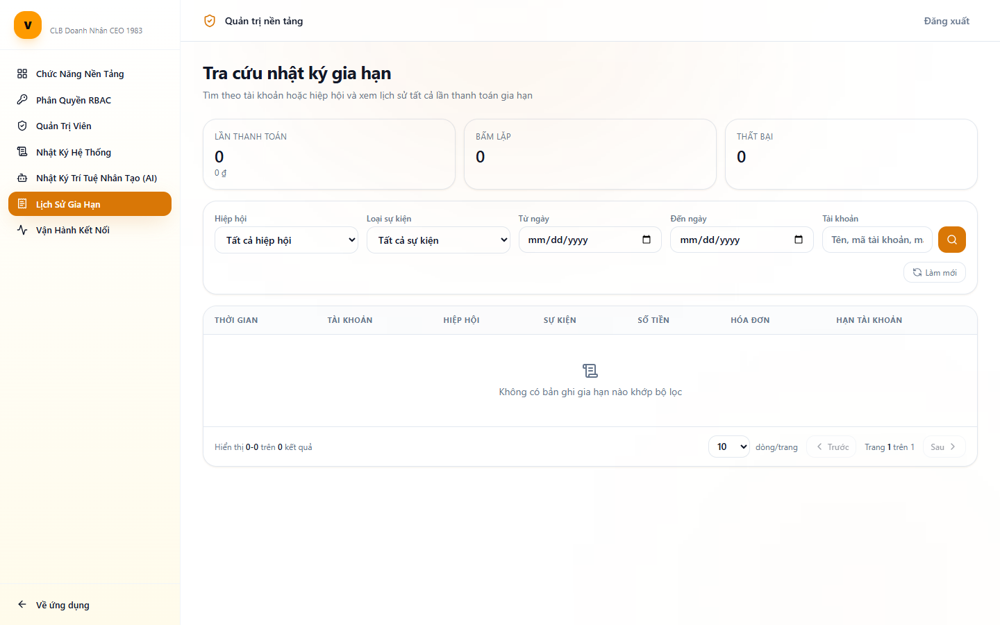
Hình 21: Lịch Sử Gia Hạn & Kiểm Toán Thu Phí Nền Tảng
CRM · CÀI ĐẶT
22. Cài Đặt Hệ Thống, Nhận Diện Thương Hiệu & Logo Tùy Biến
Thiết lập tên miền website, hotline hỗ trợ, slogan doanh nghiệp và tải lên logo chính thức
MỤC TIÊU NGHIỆP VỤ: Cá nhân hóa giao diện phần mềm hoàn toàn theo bản sắc thương hiệu riêng của doanh nghiệp.
ĐƯỜNG DẪN THAO TÁC: Sidebar -> Cài Đặt Hệ Thống (/settings)
- Bước 1: Nhập Tên doanh nghiệp chính thức và Tên viết tắt hiển thị.
- Bước 2: Nhập Website chính hệ thống (websiteUrl) có gắn liên kết kiểm tra xem trước bên ngoài.
- Bước 3: Nhập Hotline chăm sóc khách hàng và Slogan thương hiệu.
- Bước 4: Tải lên Logo chính thức của công ty dạng tệp PNG hoặc SVG trong suốt.
- Bước 5: Bấm "Lưu Cài Đặt": Hệ thống tự động cập nhật logo lên thanh Sidebar và trang đăng nhập toàn diện trong thời gian thực.
LƯU Ý NGHIỆP VỤ QUAN TRỌNG:
QUY CHUẨN LOGO: Logo tải lên nên có tỷ lệ ngang hoặc vuông, kích thước tối thiểu 500x500px trên nền trong suốt để hiển thị sắc nét nhất.
MẸO VẬN HÀNH DÀNH CHO C-LEVEL:
MẸO THƯƠNG HIỆU: Cài đặt đầy đủ hotline và website giúp nâng cao uy tín thương hiệu trong mắt đối tác khi chia sẻ danh thiếp điện tử.
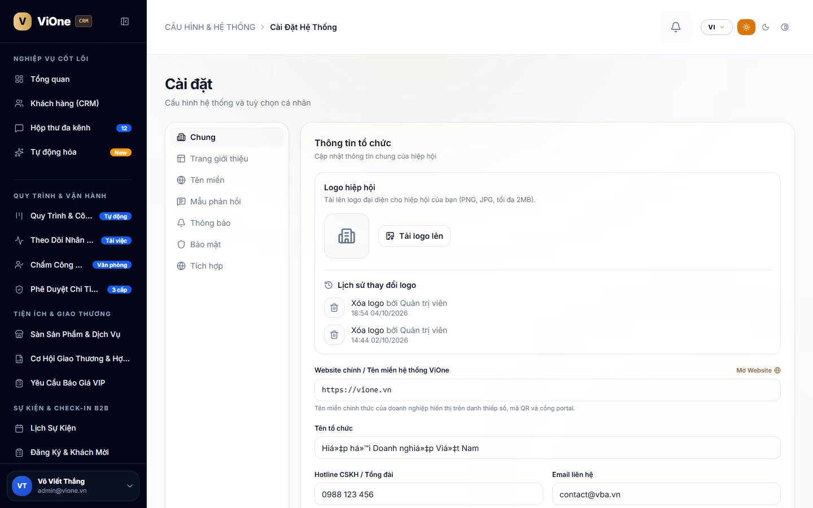
Hình 22: Cài Đặt Hệ Thống, Nhận Diện Thương Hiệu & Logo Tùy Biến